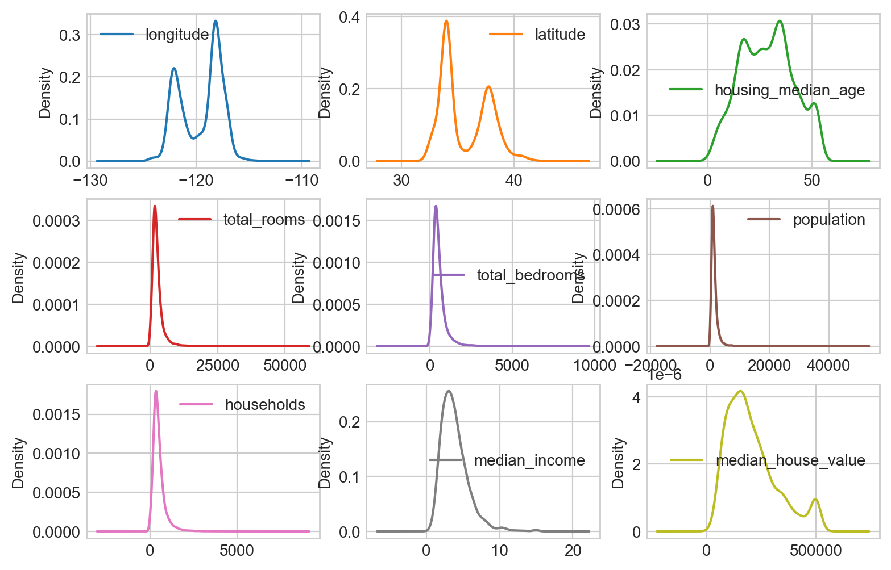
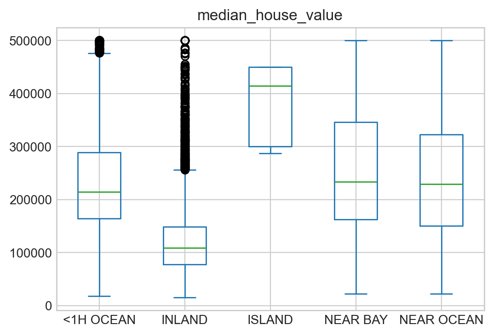

# numerical calculation & data framesimport numpy as npimport pandas as pd# visualizationimport matplotlib.pyplot as pltimport seaborn as snsimport seaborn.objects as so# statisticsimport statsmodels.api as sm# pandas optionspd.set_option('mode.copy_on_write', True) # pandas 2.0pd.options.display.float_format ='{:.2f}'.format# pd.reset_option('display.float_format')pd.options.display.max_rows =7# max number of rows to display# NumPy optionsnp.set_printoptions(precision =2, suppress=True) # suppress scientific notation# For high resolution displayimport matplotlib_inlinematplotlib_inline.backend_inline.set_matplotlib_formats("retina")
용어 정리
변수들 간의 관계에 있어서, 예측에 사용되는 변수(X)와 예측되는 변수(Y)를 구분하기 위해 여러 용어들이 사용됨.
# 카테고리형 변수에 대한 검토housing["ocean_proximity"].value_counts()
ocean_proximity
<1H OCEAN 9136
INLAND 6551
NEAR OCEAN 2658
NEAR BAY 2290
ISLAND 5
Name: count, dtype: int64
위도, 경도 값의 활용
Show Matplotlib styles
plt.style.available
# set the styleplt.style.use('seaborn-v0_8-whitegrid')
lat, lon = housing['latitude'], housing['longitude']## MATLAB 스타일# figure() 함수를 직접 호출plt.figure(figsize=(7, 5)) # create a plot figure, figsize는 생략가능# scatter() 함수를 직접 호출plt.scatter(x=lon, y=lat, label=None, edgecolors="w", linewidths=.4, alpha=0.3)# set the labelsplt.xlabel('longitude')plt.ylabel('latitude')plt.axis('equal') # set the aspect of the plot to be equalplt.show()
## 객체 방식# figure, axes라는 객체를 생성 후 메서드를 호출fig, ax = plt.subplots(figsize=(7, 5)) # ax의 메서드인 .scatter로 그래프를 그림ax.scatter(x=lon, y=lat, label=None, edgecolors="w", linewidths=.4, alpha=0.3)# ax의 메서드인 .set_xlabel, .set_ylabel로 라벨을 지정ax.set_xlabel('longitude')ax.set_ylabel('latitude')ax.axis('equal') # set the aspect of the plot to be equalplt.show()
# pandas의 plot 메서드를 사용하는 방식housing.plot.scatter(x="longitude", y="latitude", alpha=0.3)plt.axis('equal') # set the aspect of the plot to be equalplt.show()# 다음과 동일함housing.plot(kind="scatter", x="longitude", y="latitude", alpha=0.3)plt.axis('equal') # set the aspect of the plot to be equalplt.show()
# NEAR OCEAN에 해당하는 부분만 시각화housing2 = housing.query('ocean_proximity == "NEAR OCEAN"')housing2.plot.scatter(x="longitude", y="latitude", alpha=0.3, figsize=(7, 5))plt.axis('equal') # set the aspect of the plot to be equalplt.show()
# Seaborn을 사용하는 방식plt.figure(figsize=(7, 5))sns.scatterplot(housing, x="longitude", y="latitude", hue="ocean_proximity", alpha=0.5)plt.axis('equal') # set the aspect of the plot to be equalplt.show()
The San Francisco Bay Area
집값과의 관계를 보기 위해, 집값을 컬러에 매핑하면,
housing.plot.scatter( x="longitude", y="latitude", s=housing["population"] /100, # point size c="median_house_value", # color alpha=0.3, # transparency cmap="flare", # color map figsize=(7, 5),)plt.axis('equal') # set the aspect of the plot to be equalplt.show()
# density plothousing.plot.density(bw_method=0.2, subplots=True, layout=(3, 3), sharex=False, sharey=False, figsize=(9, 6))plt.show()

# Using matplotlibfig, ax = plt.subplots(3, 3, figsize=(9, 6))fig.subplots_adjust(hspace=0.5, wspace=0.5)for i inrange(3):for j inrange(3): ax[i, j].hist(housing.iloc[:, i *3+ j], bins=30) ax[i, j].set_title(housing.columns[i *3+ j])
# 한 변수의 각 레벨/카테고리별로 그리기, using pandashousing.plot.hist(column=["median_house_value"], by="ocean_proximity", sharey=False, sharex=True, figsize=(6, 8), bins=50)plt.show()
Boxplot
source: R for Data Science
# Using pandashousing.plot.box(column="median_house_value", by="ocean_proximity")plt.show()

# Using seabornplt.figure(figsize=(9, 5))sns.boxplot(housing, x="ocean_proximity", y="median_house_value", hue="median_age_cat", fill=False, gap=.2)plt.show()
customerID gender SeniorCitizen Partner Dependents tenure PhoneService \
0 7590-VHVEG Female 0 Yes No 1 No
1 5575-GNVDE Male 0 No No 34 Yes
2 3668-QPYBK Male 0 No No 2 Yes
MultipleLines InternetService OnlineSecurity OnlineBackup \
0 No phone service DSL No Yes
1 No DSL Yes No
2 No DSL Yes Yes
DeviceProtection TechSupport StreamingTV StreamingMovies Contract \
0 No No No No Month-to-month
1 Yes No No No One year
2 No No No No Month-to-month
PaperlessBilling PaymentMethod MonthlyCharges TotalCharges Churn
0 Yes Electronic check 29.85 29.85 No
1 No Mailed check 56.95 1889.5 No
2 Yes Mailed check 53.85 108.15 Yes


{kind=link}